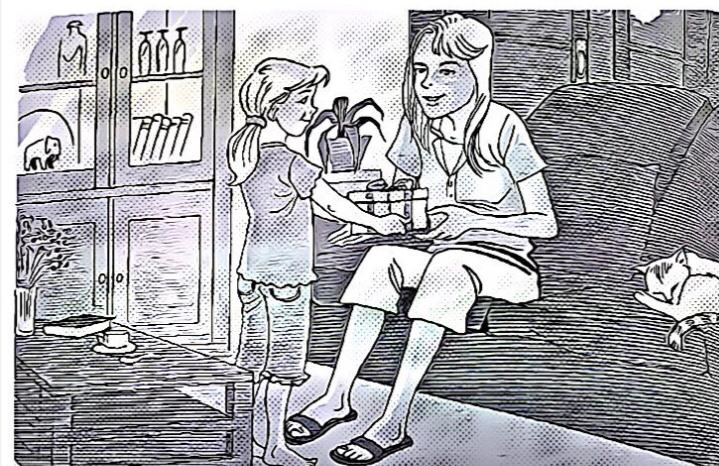
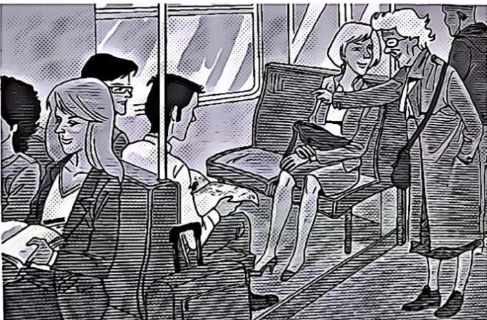
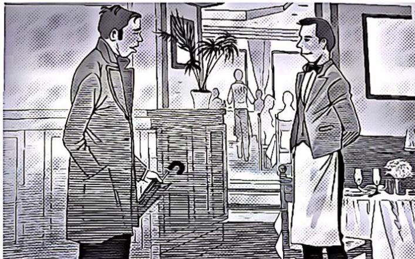
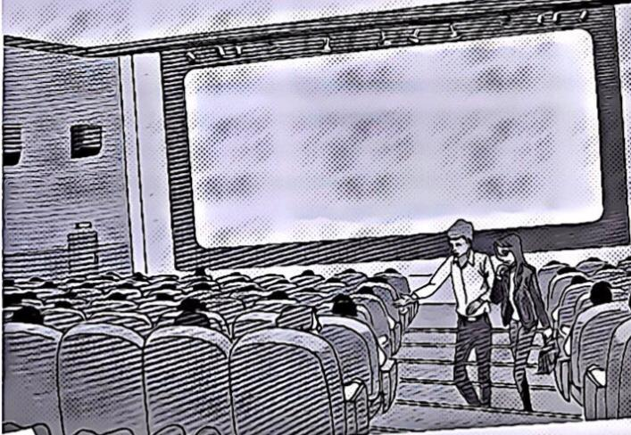

Série 5
Compréhension orale — image/audio, choix, et correction.
Q1
A1
3 pt
Correction: C — C
Question 1 : Écoutez les 4 propositions, choisissez celle qui correspond à l’image

A.
B.
C. Bonne réponse
D.
Q2
A1
3 pt
Correction: A — A
Question 2 : Écoutez les 4 propositions, choisissez celle qui correspond à l’image

A. Bonne réponse
B.
C.
D.
Q3
A1
3 pt
Correction: A — A
Question 3 : Écoutez les 4 propositions, choisissez celle qui correspond à l’image

A. Bonne réponse
B.
C.
D.
Q4
A1
3 pt
Correction: A — A
Question 4 : Écoutez les 4 propositions, choisissez celle qui correspond à l’image
A. Bonne réponse
B.
C.
D.
Q5
A2
9 pt
Correction: D — D
Question 5 : Écoutez les 4 propositions, choisissez celle qui correspond à l’image
A.
B.
C.
D. Bonne réponse
Q6
A2
9 pt
Correction: D — D
Question 6 : Écoutez les 4 propositions, choisissez celle qui correspond à l’image
A.
B.
C.
D. Bonne réponse
Q7
A2
9 pt
Correction: B — B
Question 7 : Écoutez les 4 propositions, choisissez celle qui correspond à l’image

A.
B. Bonne réponse
C.
D.
Q8
A2
9 pt
Correction: D — D
Question 8 : Écoutez les 4 propositions, choisissez celle qui correspond à l’image

A.
B.
C.
D. Bonne réponse
Q9
A2
9 pt
Correction: A — A
Question 9 : Écoutez l’extrait sonore et les 4 propositions. Choisissez la bonne réponse.
A. Bonne réponse
B.
C.
D.
Q10
A2
9 pt
Correction: C — C
Question 10 : Écoutez l’extrait sonore et les 4 propositions. Choisissez la bonne réponse.
A.
B.
C. Bonne réponse
D.
Q11
B1
15 pt
Correction: C — C
Question 11 : Écoutez l’extrait sonore et les 4 propositions. Choisissez la bonne réponse.
A.
B.
C. Bonne réponse
D.
Q12
B1
15 pt
Correction: B — Monter à pied.
Question 12 : Écoutez le document sonore et la question. Choisissez la bonne réponse.
A. Aller au 2e étage.
B. Monter à pied.Bonne réponse
C. Prendre l’ascenseur.
D. Passer par la cafétéria.
Q13
B1
15 pt
Correction: D — Manger en plein air.
Question 13 : Écoutez le document sonore et la question. Choisissez la bonne réponse.
A. Inviter des amis chez elles.
B. Rendre visite à un ami.
C. Faire des courses.
D. Manger en plein air.Bonne réponse
Q14
B1
15 pt
Correction: D — Un studio en ville.
Question 14 : Écoutez le document sonore et la question. Choisissez la bonne réponse.
A. Une chambre d’hôtel.
B. Une maison individuelle.
C. Un grand appartement.
D. Un studio en ville.Bonne réponse
Q15
B1
15 pt
Correction: D — Pour réparer des équipements informatiques.
Question 15 : Écoutez le document sonore et la question. Choisissez la bonne réponse.
A. Pour contrôler l’état des machines en service.
B. Pour donner une formation aux employés.
C. Pour mettre à jour toutes les applications.
D. Pour réparer des équipements informatiques.Bonne réponse
Q16
B1
15 pt
Correction: C — Un manque d’activités de plein air.
Question 16 : Écoutez le document sonore et la question. Choisissez la bonne réponse.
A. Un emploi du temps surchargé.
B. Un encadrement trop rigide.
C. Un manque d’activités de plein air.Bonne réponse
D. Un usage excessif des écrans.
Q17
B1
15 pt
Correction: A — Prévenir d’un danger.
Question 17 : Écoutez le document sonore et la question. Choisissez la bonne réponse.
A. Prévenir d’un danger.Bonne réponse
B. Signaler le départ d’un train.
C. Annoncer l’arrivée d’un train.
D. Avertir d’un incident.
Q18
B1
15 pt
Correction: B — Son ami est définitivement employé dans la société où il travaille.
Question 18 : Écoutez le document sonore et la question. Choisissez la bonne réponse.
A. Elle a trouvé pour son ami un emploi à temps complet dans une société.
B. Son ami est définitivement employé dans la société où il travaille.Bonne réponse
C. Son ami vient de trouver son premier emploi à l’essai.
D. Elle va signer un contrat d’embauche à temps complet.
Q19
B1
15 pt
Correction: A — De déjeuner ensemble.
Question 19 : Écoutez le document sonore et la question. Choisissez la bonne réponse.
A. De déjeuner ensemble.Bonne réponse
B. De faire une soirée.
C. De participer à un jeu.
D. De rencontrer un invité.
Q20
B2
21 pt
Correction: A — Le recrutement se fonde sur l’expérience.
Question 20 : Écoutez le document sonore et la question. Choisissez la bonne réponse.
A. Le recrutement se fonde sur l’expérience.Bonne réponse
B. Les salaires à l’embauche sont très élevés.
C. L’évolution professionnelle est très lente.
D. L’obtention d’un premier emploi est aisée.
Q21
B2
21 pt
Correction: C — Les travaux nécessaires ne sont pas encore achevés.
Question 21 : Écoutez le document sonore et la question. Choisissez la bonne réponse.
A. Le promoteur a oublié de prévenir la compagnie de téléphone.
B. Le réseau téléphonique du nouvel immeuble est déjà saturé.
C. Les travaux nécessaires ne sont pas encore achevés.Bonne réponse
D. La compagnie de téléphone manque de personnel pour le faire.
Q22
B2
21 pt
Correction: A — Des activités en faveur du développement durable.
Question 22 : Écoutez le document sonore et la question. Choisissez la bonne réponse.
A. Des activités en faveur du développement durable.Bonne réponse
B. Des formations aux nouveaux métiers de l’éducation.
C. Des sorties équestres pour les écoliers de la région.
D. Des stages à destination des animateurs jeunesse.
Q23
B2
21 pt
Correction: B — Comment recycler son sapin ?
Question 23 : Écoutez le document sonore et la question. Choisissez la bonne réponse.
A. Comment protéger ses végétaux ?
B. Comment recycler son sapin ?Bonne réponse
C. Comment replanter un arbre ?
D. Comment scier une branche ?
Q24
B2
21 pt
Correction: D — Pour suivre son compagnon.
Question 24 : Écoutez le document sonore et la question. Choisissez la bonne réponse.
A. Pour changer de profession.
B. Pour découvrir de nouveaux lieux.
C. Pour se rapprocher de sa famille.
D. Pour suivre son compagnon.Bonne réponse
Q25
B2
21 pt
Correction: B — Ils osent davantage partir à l’étranger qu’auparavant.
Question 25 : Écoutez le document sonore et la question. Choisissez la bonne réponse.
A. Ils aiment passer leurs vieux jours dans le sud de la France.
B. Ils osent davantage partir à l’étranger qu’auparavant.Bonne réponse
C. Ils payent plus d’impôts que les autres citoyens européens.
D. Ils prennent des cours de langue pour améliorer leur niveau.
Q26
B2
21 pt
Correction: C — Un récit autobiographique ancré dans la vie intellectuelle du siècle dernier.
Question 26 : Écoutez le document sonore et la question. Choisissez la bonne réponse.
A. Un essai historique sur la vie à Paris pendant la Seconde Guerre mondiale.
B. Un livre de souvenirs sur l’histoire mouvementée de sa famille.
C. Un récit autobiographique ancré dans la vie intellectuelle du siècle dernier.Bonne réponse
D. Un roman sur l’impact des événements historiques sur le destin individuel.
Q27
B2
21 pt
Correction: C — De son emploi du temps professionnel.
Question 27 : Écoutez le document sonore et la question. Choisissez la bonne réponse.
A. De ses difficultés à se réveiller le matin.
B. De son dernier salaire qui est insuffisant.
C. De son emploi du temps professionnel.Bonne réponse
D. De son manque d’organisation habituel.
Q28
B2
21 pt
Correction: C — Elle est restée toute seule.
Question 28 : Écoutez le document sonore et la question. Choisissez la bonne réponse.
A. Elle est sortie en boîte de nuit.
B. Elle a dîné avec sa famille.
C. Elle est restée toute seule.Bonne réponse
D. Elle a vu un mauvais film.
Q29
B2
21 pt
Correction: D — Sa fréquentation des salles dès son plus jeune âge.
Question 29 : Écoutez le document sonore et la question. Choisissez la bonne réponse.
A. L’absence de distractions dans le village où elle habitait.
B. L’influence autoritaire que son père a exercée sur elle.
C. Le choc du tout premier film qu’elle a vu dans sa vie.
D. Sa fréquentation des salles dès son plus jeune âge.Bonne réponse
Q30
C1
26 pt
Correction: C — À créer une échelle lisible de classification des élèves.
Question 30 : Écoutez le document sonore et la question. Choisissez la bonne réponse.
A. À classer les établissements selon un taux de performance.
B. À communiquer sur les progrès de l’élève dans chaque matière.
C. À créer une échelle lisible de classification des élèves.Bonne réponse
D. À susciter chez l’élève l’envie de devenir le meilleur de la classe.
Q31
C1
26 pt
Correction: C — Manger plus léger sans changer ses habitudes.
Question 31 : Écoutez le document sonore et la question. Choisissez la bonne réponse.
A. Manger de tout, y compris ce qu’il n’aime pas.
B. Cesser de consommer du pain ou des féculents.
C. Manger plus léger sans changer ses habitudes.Bonne réponse
D. Se garder de consommer des aliments sucrés.
Q32
C1
26 pt
Correction: D — Les jeux de mots récurrents dans les titres.
Question 32 : Écoutez le document sonore et la question. Choisissez la bonne réponse.
A. La diversité des parlers régionaux des personnages.
B. La mise en relief des formules figées de la langue.
C. Le recours constant au registre familier.
D. Les jeux de mots récurrents dans les titres.Bonne réponse
Q33
C1
26 pt
Correction: A — Augmenter la fréquentation des théâtres.
Question 33 : Écoutez le document sonore et la question. Choisissez la bonne réponse.
A. Augmenter la fréquentation des théâtres.Bonne réponse
B. Créer une troupe de théâtre indépendante.
C. Déterminer les nouveaux enjeux du théâtre.
D. Jouer dans des pièces de théâtre inédites.
Q34
C1
26 pt
Correction: A — De prendre ouvertement position dans des rivalités internes.
Question 34 : Écoutez le document sonore et la question. Choisissez la bonne réponse.
A. De prendre ouvertement position dans des rivalités internes.Bonne réponse
B. De se confier à tous ses collègues avant de les connaître.
C. De trop faire valoir ses compétences pour montrer sa supériorité.
D. De vouloir participer à tous les projets sans vraiment s’investir.
Q35
C1
26 pt
Correction: B — Des circuits de distribution courts.
Question 35 : Écoutez le document sonore et la question. Choisissez la bonne réponse.
A. De nouveaux modes de culture.
B. Des circuits de distribution courts.Bonne réponse
C. Des contrôles sanitaires plus rapides.
D. Des systèmes de production innovants.
Q36
C2
33 pt
Correction: A — L’intérêt principal de sa mise en place a disparu.
Question 36 : Écoutez le document sonore et la question. Choisissez la bonne réponse.
A. L’intérêt principal de sa mise en place a disparu.Bonne réponse
B. Le ministère manque de moyens pour l’organiser.
C. Le taux de réussite des candidats est en baisse.
D. Le nombre de fraudes constatées augmente.
Q37
C2
33 pt
Correction: D — Les réhabilitations ont une portée limitée.
Question 37 : Écoutez le document sonore et la question. Choisissez la bonne réponse.
A. Les bâtiments restaurés sont en nombre insuffisant.
B. Les cités réaménagées sont surtout résidentielles.
C. Les municipalités privilégient les projets coûteux.
D. Les réhabilitations ont une portée limitée.Bonne réponse
Q38
C2
33 pt
Correction: B — La réalisation de soi par le travail est devenue une obligation.
Question 38 : Écoutez le document sonore et la question. Choisissez la bonne réponse.
A. L’accès à la reconnaissance sociale est conditionné par le travail.
B. La réalisation de soi par le travail est devenue une obligation.Bonne réponse
C. Les responsabilités au travail sont considérées comme des priorités absolues.
D. Le travail est systématiquement opposé à l’épanouissement personnel.
Q39
C2
33 pt
Correction: A — Elle est trop éloignée des orientations politiques actuelles.
Question 39 : Écoutez le document sonore et la question. Choisissez la bonne réponse.
A. Elle est trop éloignée des orientations politiques actuelles.Bonne réponse
B. Elle fait référence à des événements historiques douloureux.
C. Elle fait ressurgir des rivalités ou des antagonismes oubliés.
D. Elle remet en cause la domination de fait de certains pays.